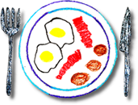

Palindrome City Diner

PALINDROME CITY DINER
FOOD PALINDROMES:
1. A nut for a jar of tuna
2. Dad: "Alas, a salad ad!"
3. Do offer a ref food.
4. Enid and Edna dine.
5. Evil olive
6. Feeble Tom's motel beef
7. Go hang a salami! I'm a lasagna hog!
8. Gong! Get set, Ed, to not detest egg-nog.
9. I saw desserts. I'd no lemons, alas no melon. Distressed was I.
10. "No cab, eh, Ted?" I sat up. I put aside the bacon.
11. No lemons, no melon.
12. No way a papaya won!
13. Red rum, sir, is murder.
14. Sit on a potato pan, Otis.
15. Wonton on salad? Alas, no, not now!
16. Yo! Banana boy!
Return to Home
Copyright © 2007 Palindrome City